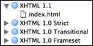
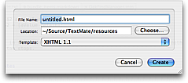

A template consists of a (shell) command which generates a new file based on the template's contents. Below is shown how an index.html file is part of the XHTML 1.1 template.

When executing the template shell command, the working directory is set to the directory containing the template files so that these can be referenced by name only (i.e. without path) and the shell command has access to the following three environment variables (in addition to the normal variables):
TM_NEW_FILE — the full path, including the name of the file to be generated (i.e. the one the user entered in the GUI).
TM_NEW_FILE_BASENAME — the base name of the file to be generated. If TM_NEW_FILE is /tmp/foo.txt then this variable would be foo without the folder name and the file extension.
TM_NEW_FILE_DIRECTORY — the folder name of the file to be generated.
A template can then be instantiated either by using the menus (File → New From Template) or for projects by using the New File button in the project drawer (⇧⌘N).
